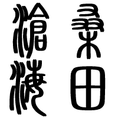
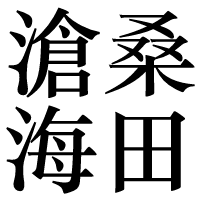
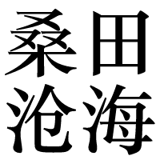
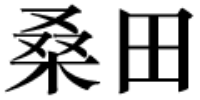
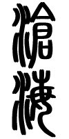
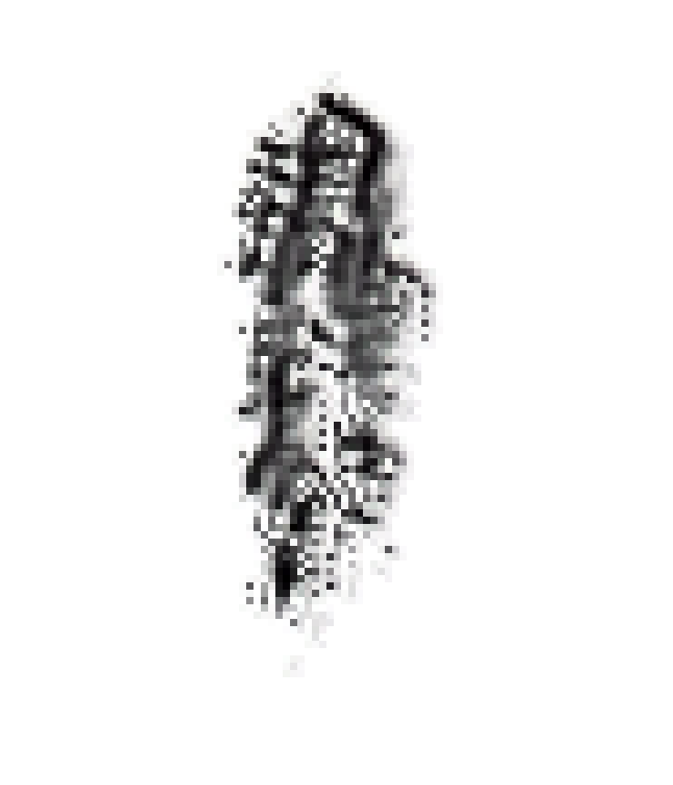
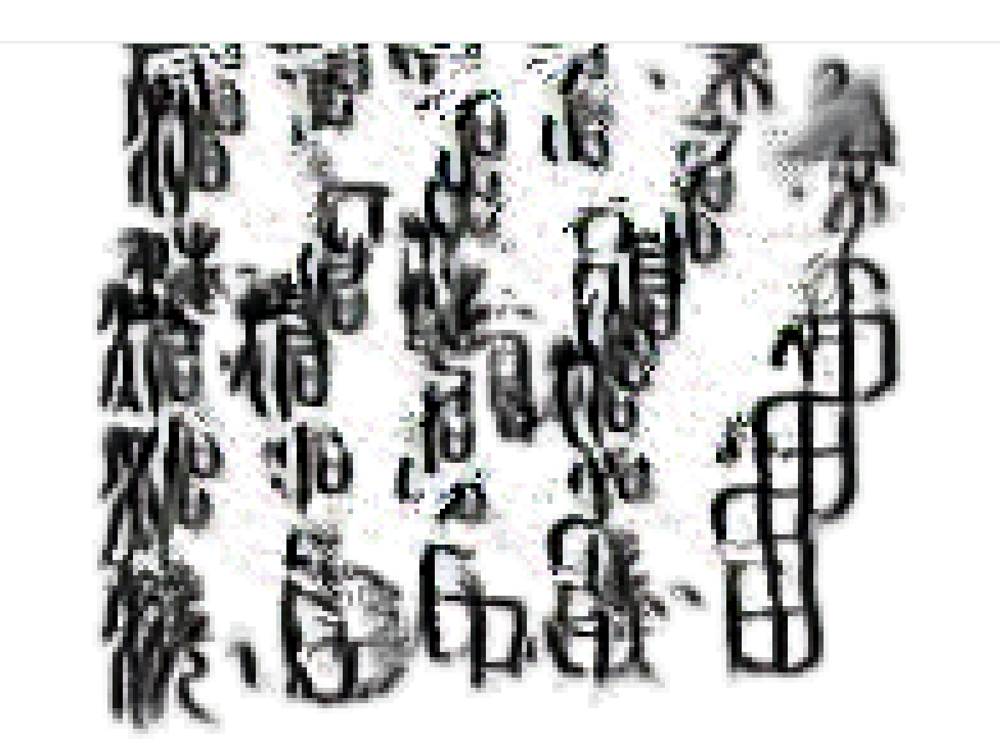
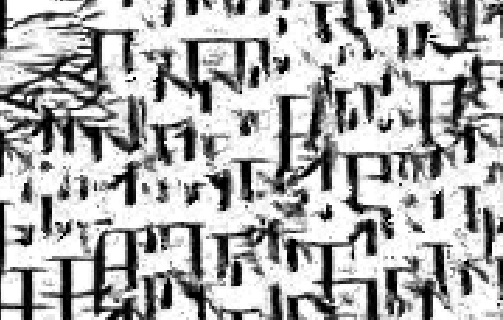

If your computer's fan is running so fast that you feel your cpu is going to burn,
the above script.
“滄海桑田” is an idiom in Chinese, referring to the wide sea (滄海) and fields for planting trees and crops (桑田) in literal. But these two words are often combined as a whole, used to describe the “great changes are seen in the course of time”, the
transformations of the worldly things are like the sea turning into a farming field.
Somehow I found it is also appropriate for describing the ever-changing forms of characters. In this experimental work, I train the NCA model with
images of the word “桑田滄海” in the seal, traditional and simplified scripts. The alignments of the
characters vary from script to script, according to their user’s common writing habits. As the pictures shown below, the words in the seal script are vertically aligned, read from right to left, while the simplified version is aligned
horizontally, as how people read today.





The CA model starts with generating the seal script version of the words but jumps to another random rule from time to time,
which tries to generate another type of script.
While neither the CA nor the neural network knows a thing about Chinese characters,
they create some interesting and unexpected patterns. Sometimes characters travel from one place to another,
sometimes they expand and other times they collapse,
blended together and become indistinguishable.



You can also press your left mouse button on the canvas to interact with it. The misty greyscale shade is so
reminiscent of Chinese calligraphy and ink painting.
Today people consider that the second round of Chinese Character Simplification programme kind of went too far...but who knows?
What is the future of Chinese characters? Will it be keeping simplified to strokes and marks? Or perhaps it will go on another way?
One thing that I found very interesting about cellular automata is the complexity sometimes shown in its behaviour, classified as class 4 by Stephen Wolfram. Local changes to the initial pattern may spread indefinitely, leading to completely
different results. However, it can be tricky to design the rules and initial states of the cells.
The neural network, in another way, makes up for this deficiency. Each time you run this page, you will end up with a dynamic visual that is entirely different from any other ones that you previously get. Actually, the outcome in each run is
unique and hard to reproduce.Actually, the outcome in each run is unique and hard to reproduce. There are so many possibilities, and anything could happen, just due to the tiny uncertainty of the initial cells' states.